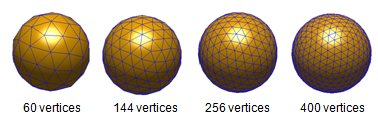
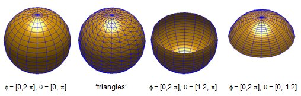
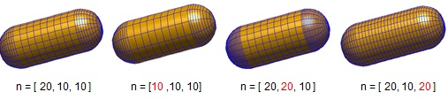
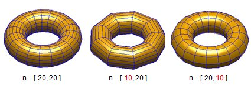

Elementary particle shapes
The MNPBEM toolbox provides a few routines for setting up particles with elementary shape (sphere, rod, torus, cube).
Contents
Trisphere function
p = trisphere( 256, 10 );
generates a sphere with 256 vertices and with a diameter of 10 nanometers. One can plot the sphere with
plot( p, 'EdgeColor', 'b' );
The trisphere function stores a number of sphere triangulations for the following number of vertices:
32 60 144 169 225 256 289 324 361 400 441 484 529 576 625 676 729 784 841 900 961 1024 1225 1444
If one calls trisphere with a different number of vertices, the number is rounded to the nearest stored value and a warning is given. trisphere triangulations are particularly useful for testing and comparison with Mie theory because all distances between the vertices on the sphere are approximately the same and only a small number of vertices is needed.

Trispheresegment function
A regular surface discretization for spheres can be obtained by calling
p = trispheresegment( phi, theta, diameter );
The azimuthal and polar angles phi and theta define the vertices for the sphere discretization, e.g.
- phi=linspace(0,2*pi,21)
- theta=linspace(0,pi,15)
To obtain a surface discretization through triangles rather than quadrilaterals, one should call trispheresegment(phi,theta,diameter,'triangles').

Trirod function
A rod-shaped particle with the symmetry axis along z is produced through
p = trirod( diameter, height, [ n1, n2, n3 ] );
p = trirod( diameter, height, [ n1, n2, n3 ], 'triangles' );
The parameters n determine the number of discretization points
- n1 for the circumference of the rod,
- n2 for the polar angles of the rod caps,
- n3 for the cylinder-shaped middle part of the rod, and
- 'triangles' is a keyword that indicates that the surface is discretized through triangles rather than quadrilaterals.

Tritorus function
A torus-shaped particle is produced through
p = tritorus( diameter, radius, [ n1, n2 ] );
p = tritorus( diameter, radius, [ n1, n2 ], 'triangles' );
where a cylinder with a given radius is folded to a torus with a given diameter. The parameters n determine the number of discretization points
- n1 around the torus circumference (determined by diameter),
- n2 around the cylinder circumference (determined by radius).
- 'triangles' is a keyword that indicates that the surface is discretized through triangles rather than quadrilaterals.

Tricube function
A cube with rounded edges is produced through
p = tricube( n ); % set rounding parameter p = tricube( n, 'e', e );
n is a number that controls the cube discretization (typical values lie between 10 and 20) and e controls the rounding of the edges (the default value is 0.25).
Copyright 2017 Ulrich Hohenester